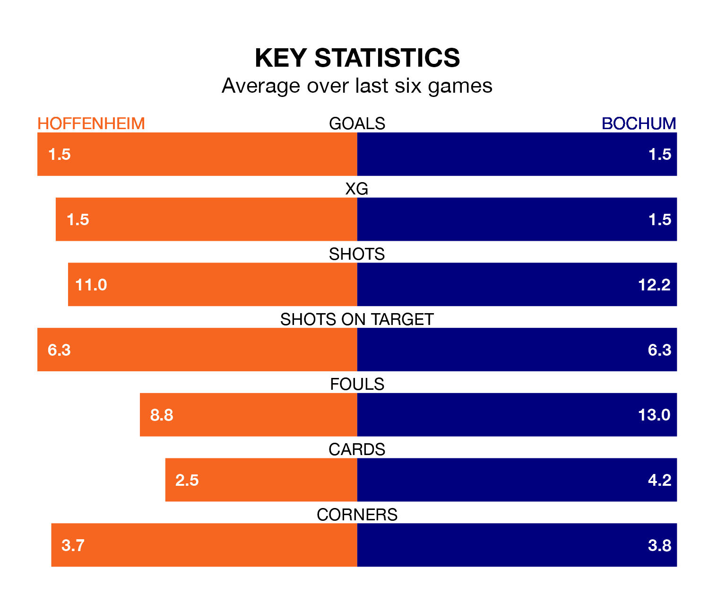

Bochum face Hoffenheim on Friday seeking to protect their long unbeaten run in the Bundesliga.
Bochum are unbeaten in five, with two wins and three draws, ahead of the 7.30pm kick-off.
They face a Hoffenheim team who have won one and drawn two over the same number of games.
With 14 goals in 13 games so far this season, Bochum are scoring at below the league average rate with 1.1 goals per game. And they are conceding more than average, letting in 26 goals at a rate of 2.0 per game.
Hoffenheim, meanwhile, are above average scorers, with 1.9 goals per game, compared to a league average of 1.7. They have conceded 1.8 goals per game.
The hosts are sixth in the table after 13 games, of which they have won six and drawn two, earning 20 points.
The away side are six places behind Hoffenheim in 12th, with two wins and seven draws putting them on 13 points.
In the last five years, Hoffenheim and Bochum have played each other on four occasions. Hoffenheim won one of them and Bochum the other.
On average, Hoffenheim scored 1.5 goals and Bochum 2.8 in those matches.
Their last meeting was on February 4, when Bochum won 5-2 at home.
Hoffenheim's last match was on Saturday, a 2-1 loss against Borussia M'gladbach, with Wout Weghorst getting the goal for Hoffenheim.
Bochum beat Wolfsburg 3-1 last time out, also on Saturday, with Bernardo Fernandes, Christopher Antwi-Adjej and Patrick Osterhage on the scoresheet.
